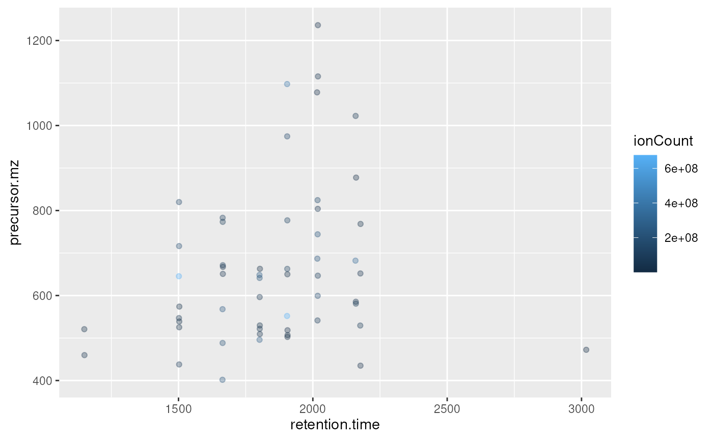
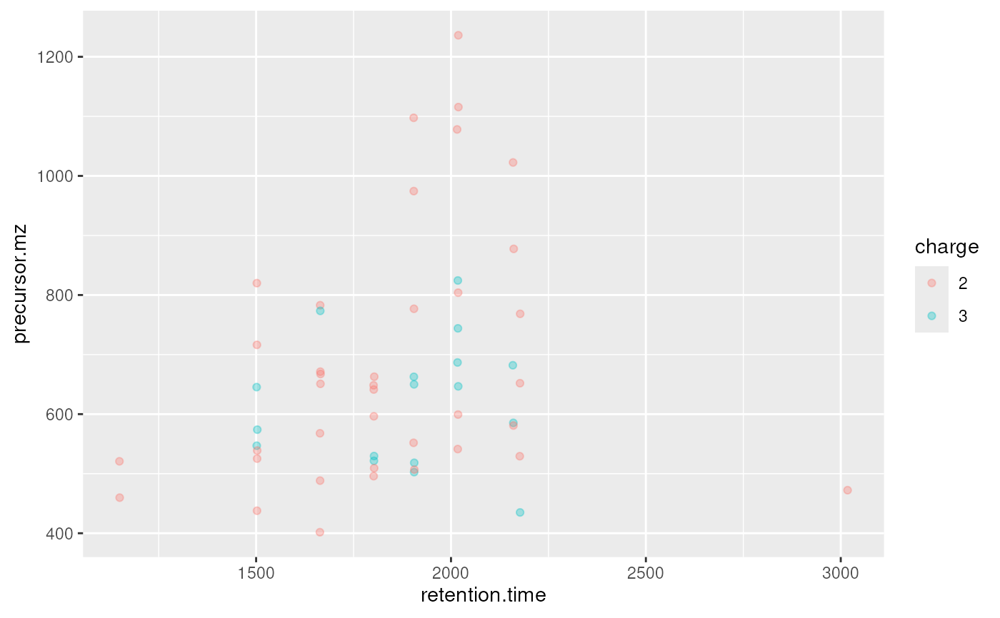

The 'plot2d' method for 'MSnExp' quality assessment
plot2d-methods.RdThese methods plot the retention time vs. precursor MZ for the whole
"MSnExp" experiment. Individual dots will be
colour-coded to describe individual spectra's peaks count, total ion
count, precursor charge (MS2 only) or file of origin.
The methods make use the ggplot2 system. An object of class
'ggplot' is returned invisibly.
Arguments
| object | An object of class |
|---|---|
| z | A character indicating according to what variable to colour the dots. One of, possibly abreviated, "ionCount" (total ion count), "file" (raw data file), "peaks.count" (peaks count) or "charge" (precursor charge). |
| alpha | Numeric [0,1] indicating transparence level of points. |
| plot | A logical indicating whether the plot should be printed (default is 'TRUE'). |
Methods
signature(object = "MSnExp", ...)Plots a 'MSnExp' summary.
signature(object = "data.frame", ...)Plots a summary of the 'MSnExp' experiment described by the data frame.
See also
The plotDensity and plotMzDelta methods
for other QC plots.
Author
Laurent Gatto <lg390@cam.ac.uk>
Examples
itraqdata#> MSn experiment data ("MSnExp") #> Object size in memory: 1.9 Mb #> - - - Spectra data - - - #> MS level(s): 2 #> Number of spectra: 55 #> MSn retention times: 19:09 - 50:18 minutes #> - - - Processing information - - - #> Data loaded: Wed May 11 18:54:39 2011 #> Updated from version 0.3.0 to 0.3.1 [Fri Jul 8 20:23:25 2016] #> MSnbase version: 1.1.22 #> - - - Meta data - - - #> phenoData #> rowNames: 1 #> varLabels: sampleNames sampleNumbers #> varMetadata: labelDescription #> Loaded from: #> dummyiTRAQ.mzXML #> protocolData: none #> featureData #> featureNames: X1 X10 ... X9 (55 total) #> fvarLabels: spectrum ProteinAccession ProteinDescription #> PeptideSequence #> fvarMetadata: labelDescription #> experimentData: use 'experimentData(object)'plot2d(itraqdata,z="ionCount")plot2d(itraqdata,z="peaks.count")plot2d(itraqdata,z="charge")